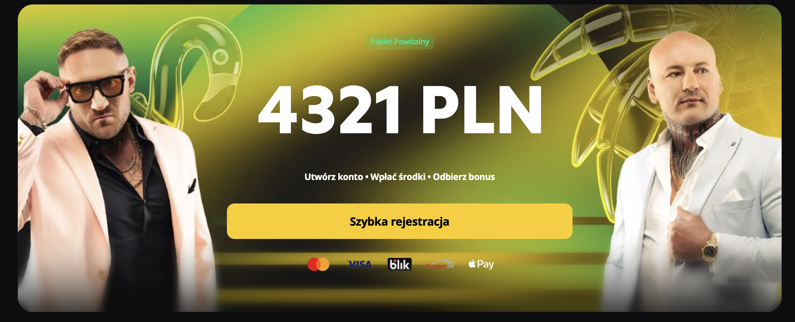
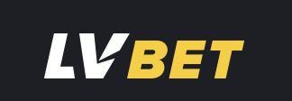

Czekamy na terminarz
Po pobraniu danych pojawią się tutaj spotkania do obserwacji.
analiza w toku
forma · terminarz · zdrowy rozsądek
Tu piłka jest okrągła, bramki są dwie, a „pewniak” zwykle właśnie przegrał z ostatnią drużyną tabeli. Sprawdzamy mecze i bawimy się analizą bez napinki.
Terminarz i dostępne wyniki z kilku kolejnych dni. Przełącz dyscyplinę oraz zakres czasu bez przeładowywania strony.
Trzy wydarzenia wybrane z aktualnego terminarza. To luźne inspiracje do oglądania, a nie kupon z gwarancją.
Po pobraniu danych pojawią się tutaj spotkania do obserwacji.
analiza w tokuKrótka ściąga, co właściwie oznaczają najpopularniejsze rynki. Najpierw rozumiesz, dopiero potem klikasz.
Canada · Mexico · USA
Aktualne pary, wyniki i kolejne mecze fazy pucharowej. Dane odświeżają się automatycznie co minutę.
Humorystyczne wskazówki do oglądania spotkań. Bez kursów, bez gwarancji i bez magicznej kuli.
Radar czeka na aktualny terminarz. Gdy pojawią się wydarzenia, wybierze jedno spotkanie na podstawie dostępnych danych, a nie fazy księżyca.
Typ zabawowy: oglądamy, nie gonimy strat

Link zewnętrzny · 18+
LV BET udostępnia zakłady przedmeczowe i live dla wielu dyscyplin. Przed grą sprawdź regulamin, ustaw limit i pamiętaj, że żaden kurs nie jest obietnicą wygranej.
Przejdź do LV BET Strona dla osób pełnoletnich. Hazard wiąże się z ryzykiem utraty pieniędzy. To zwykły link zewnętrzny, nie informacja o gwarantowanym zysku.